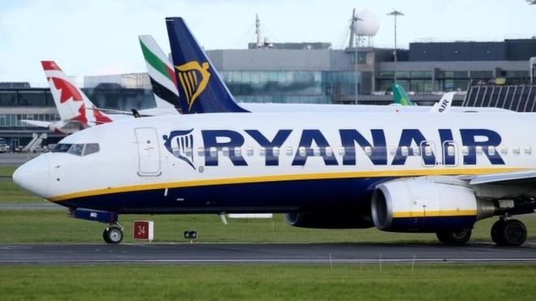

Facebook says 126 million Americans may have seen Russia-linked political posts. Facebook has said as many as 126 million American users may have seen content uploaded by Russia-based operatives over the past two years.
Netflix cancels House of cards amid Kevin Spacey allegations Netflix has pulled the plug on House of Cards, a day after its lead actor Kevin Spacey was accused of sexually harassing a teenage boy.
 Ryanair buoyant despite cancellations. Ryanair has said it still expects to make record annual profits this year, despite disruptions to its schedules that led it to cancel 20,000 flights.